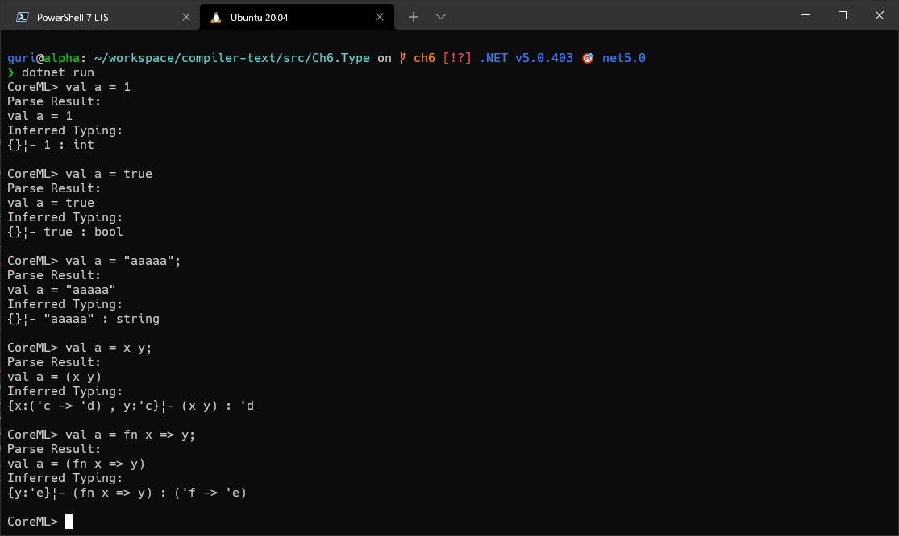
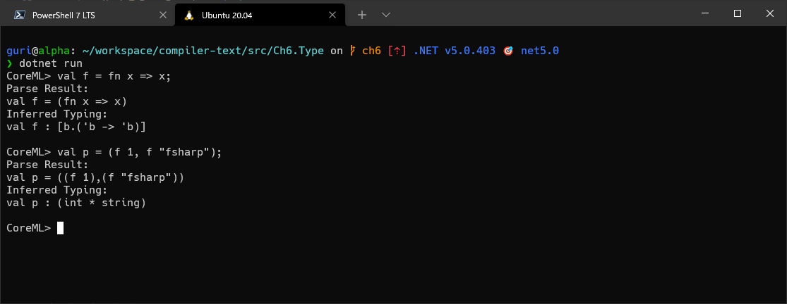
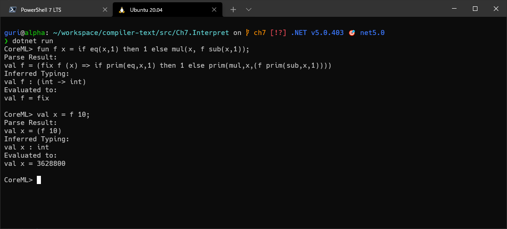
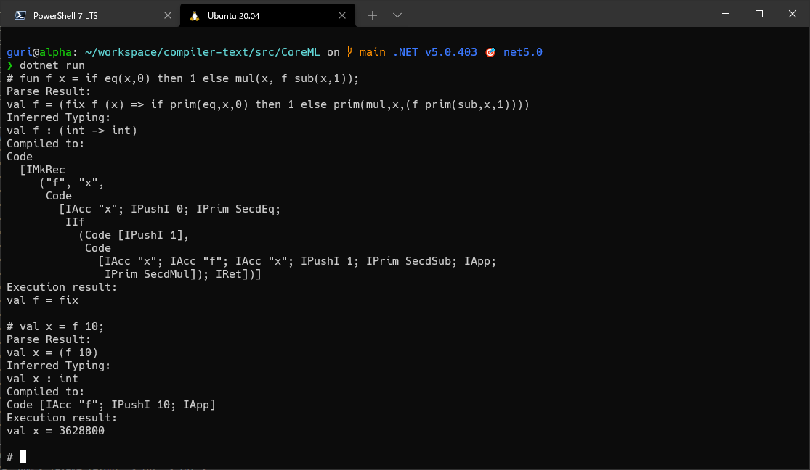

『コンパイラ ー 原理と構造』をF#に翻訳した
型推論などの実装を学べるらしいと聞いたので購入。
公式ページ : https://www.kyoritsu-pub.co.jp/bookdetail/9784320124783
公式のリポジトリをカンニングしまくったリポジトリはこれ。
https://github.com/guricerin/compiler-text-fs
第1章 : 計算とプログラミング言語
みんな大好きチューリングマシンについての議論。プログラミングはまだ行わない。
以下の引用文では、おれがはじめてプログラマを志したときのきっかけというかロマンががっつり言語化されている。いやもちろん、ここまで理路整然と思考していたわけじゃないけども。
種々の記号を含むことばで表されたものは、抽象的には、有限の記号（シンボル）列と理解できる。Turing は、このようなことばを使った活動のモデルとしての「計算」を以下のように特徴づけた。
- 有限のシンボル集合を用いる。
- 種々の情報や処理手順をシンボル列で表現する。
- シンボル列を格納する記憶装置を用いて、以下の処理を繰り返し、必要な情報を表すシンボル列を作り出す。
- シンボルを読み込み、
- シンボルを別のシンボルへ変換し、
- シンボルを書き出す。
（中略）Turing の画期的な洞察は、この構造が、算術演算などに限らず、人間が行う問題の解決全般に共通するものであり、この構造を持った機械を表現すれば、汎用の問題解決システムを実現できる、というものである。
んーでも、チューリングのチの字も知らないときになんでプログラミングに興味をもったのか。ああ、神林長平の『言壺』とか『ぼくらは都市を愛していた』やな、思い出した。
第2章 : SML#チュートリアル
SML#でチューリングマシンを実装する。SML#はさっぱりなので、同じML系統という理由でF#で演習することにした。F#書くの久々やからパターンマッチの構文とかRustとごっちゃになったわ。
やることは以前の『アンダースタンディング コンピュテーション』とほぼ変わらない。が、本書で定義している型名がSだのDだのやたらとシンプルなので解読に苦労した。
第3章 : 文字列の性質と文字列処理
ファイルから読み込んだテキストを、空白区切りの文字列に加工して順番に標準出力に流していくプログラムを実装する。
F#、というかC#のAPIが多機能なので、本書よりもだいぶコード量が少ない。むしろ多機能過ぎてどんな書き方がスマートかで無駄に悩んだ。C#を書く力が明らかに衰えている。
第4章 : 字句解析
lex/yaccを導入。ここでは章題通りlexで字句解析を行い、文字列をトークン列に変換する。F#ではFsLexYaccで代用可能。
parsecも大概だったが、lexはさらにむずい。正規表現やしいけるやろとたかをくくっていたがバグりまくる。答えはすでにあるというのに。いまさら気づいたが、ひょっとして言語実装の才能がない？
なにが一番きついって、lex/yaccは独自の記法を用いるのでLinterなどによる支援がまったく受けられなくなること。おっかしーな、いまおれが書いてるの静的型付け言語のはずなんだが。
ちなみにおれのコードでyaccも使用しているのは、lex単体だとデフォではトークン列ではなく1つのトークンしか解析してくれないから。
lex/yaccの書き方がSML#とF#で結構違うので、以下の2ページを参考にした。浅井 健一氏の「最低限の lex / yacc」はとくにわかりやすかった。なんてったって日本語だし。
FsLexYacc : https://fsprojects.github.io/FsLexYacc/
最低限の lex / yacc : https://kenichi-asai.github.io/lex-yacc/index.html
第5章 : 構文解析
LR構文解析やら Chomsky の生成文法やら。LR構文解析は Knuth が開発したと知って Knuth はなんでもできるバケモンやなあと思った。
おれが Chomsky を知ったのはたしか『虐殺器官』がはじめて。それからしばらくして『メディア・コントロール 正義なき民主主義と国際社会』という本を大学3年時に書いたくだらない小論文の参考資料にした覚えがある。
構文解析の話題で有限オートマトンの話が出てくるので「文脈自由文法はプッシュダウン・オートマトンじゃないと解析できないんじゃなかったっけ」と思ってたら、計算コストを度外視すれば記憶領域のない有限オートマトンでも解析できるらしいのでへーとなった。この理解が正しいかはわかんない。
fsyaccがParser.fsyをロードして出力するParser.fsだが、なぜか以下のようにモジュール名を中途半端な位置に挿入しよるせいでビルドが途中で失敗する。おれの脳だと原因不明で、いまのところ手動で先頭行にもっていってから再度ビルドするはめになっている。
// Implementation file for parser generated by fsyacc
#nowarn "64";; // turn off warnings that type variables used in production annotations are instantiated to concrete type
open FSharp.Text.Lexing
open FSharp.Text.Parsing.ParseHelpers
# 1 "Parser.fsy"
module Ch5.Parse.Parser // <- こいつ
ちなみにParser.fsyはこうしている。おれの目がバグってなければとくに問題はないはずだが……。
%{
module Ch5.Parse.Parser
open Ch5.Parse.Syntax
%}
%token ADD SUB MUL DIV EQ EQUAL
%token LPAREN RPAREN
// （以下省略）
この章以降からCoreMLという言語の処理系を段階的に実装していくことになるが、そのCoreMLの文法に見慣れない記法があった。
#1 <exp> （第1要素取り出し）
#2 <exp> （第2要素取り出し）
「OCamlとかにこんな文法あったっけ」と思ったが、SML#独自の文法とのこと。
第6章 : 型の解析と型推論
内容が完全に未知のこの章からがおれにとっての本命。そのわりにはここまで四苦八苦したし、当然すごく難しい。
型判定の導出は木構造となるらしい。式に含まれる部分式をたどっていき、子ノードの型を決定したら今度は逆向きに親ノードへ型環境を伝搬させて、最後に式全体の型を判定する感じ。親から子だけでなく子から親にも環境を渡すということを除けば、構文木の評価のやり方とそんなには変わらない。たぶん。
上のようにしてかき集めた型環境を利用し、型変数の連立方程式を作成する。型変数の代入と等式の変形によってこの連立方程式を解くことが型推論につながる。
この章の前半までの実装の実行結果がこちら。やってることはSML#をF#に翻訳してるだけやのにめっちゃ疲れた。

後半からは多相型の解析を実装。以下のページも参照したが、まるでちんぷんかんぷんである。
https://www.fos.kuis.kyoto-u.ac.jp/~igarashi/class/isle4-06w/text/miniml011.html
http://www.cs.tsukuba.ac.jp/~kam/complogic/8.pdf
比較的わかりやすいのは以下のページ。
https://qiita.com/uint256_t/items/7d8c8feeffc03b388825
https://admarimoin.hatenablog.com/entry/2019/12/30/000337
で、後半の実行結果。引数をそのまま返す関数fの多相性が保たれている。

わからなすぎてSML#をF#に翻訳するだけの機械と化していた。世の情報系の学生はこの内容をすんなり理解できると思うと目がクラクラしてくる。
第7章 : インタープリタ
プログラム全体の式を評価するために、やはり構文木を再帰的に下っていき、部分式の値を判定・親ノードに伝搬させていく。
関数クロージャがどういう存在かいまいちわかってなかったが、「引数だけでなく外側の環境も受け取り、その環境に引数の変数名：値のペアを追加したものをクロージャ内の環境とする」という説明でだいぶ腑に落ちた。再帰関数の実装は不動点コンビネータがどうのこうのと相変わらずわけわからん。
毎度おなじみのeval関数でもクロージャと再帰関数のあたりは難しかった。それ以外は簡単。
以下は階乗を再帰関数で定義して実行した様子。

第8章 : 抽象機械へのコンパイル
Lispインタプリタのことを調べてるときに名前だけは見かけたことのある仮想機械、SECD機械の中間言語にコンパイルする仕組みを作る。
SECD機械はスタックマシンの一種で、以下4つのスタック（という名のリスト）をもつ。スタックの強力さについては『コンピュータシステムの理論と実装』で散々聞かされた（もっと聞けって？）。
- Stack : 値を格納。
- Environment : 変数と値の組を格納。
- Code : 次に実行される仮想機械の命令列。
- Dump : 関数呼び出しの際に関数からの戻り先情報（EとC）を格納。
Wikipediaに記載されている定義と少し違い、本書では Environment をリストのリストではなくMap<string, value>としている。
んで、これまた名前だけはよく見かける継続計算なるものも軽く説明される。「現在の計算に続いて実行される計算」のことらしい。ここではCodeスタックのことと考えればええんか。以下の資料によればそんな単純なものじゃない気がするが、まあそれは置いとく。
http://pllab.is.ocha.ac.jp/~asai/cw2011tutorial/main-j.pdf
『コンピュータシステムの理論と実装』の中間言語ではスタックとRAMのそれぞれ1つをデータ格納領域としていた。それに比べてSECD機械はスタックが4つもあるので、データ領域の操作が直感的かつコード量も少ない。
と思いきや、以下の記事を見てみるとSECD機械の本来の中間言語はもっと低レイヤな感じがする。あ、いや、下のは中間言語ではなくて実際のSECDの機械語をエミュレートしたものか？ちょっとわからん。
https://zehnpaard.hatenablog.com/entry/2018/12/23/075158
以下は7章と同じく階乗関数をコンパイルした結果。

まとめ
新たに学習できたこと。
lex/yaccの使い方。- 型推論のなんとなくの実装方法。
- クロージャのなんとなくの実装方法。
- 再帰関数のなんとなくの実装方法。
- SECD機械。
本書で記載されている理論的な詳細は超むずいので、おれみたいなあほは先に『アンダースタンディング コンピュテーション』を読んでおくこと。読んでてもほとんど理解できなかったんすがね。つーかまず論理学やな。